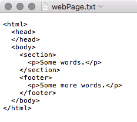
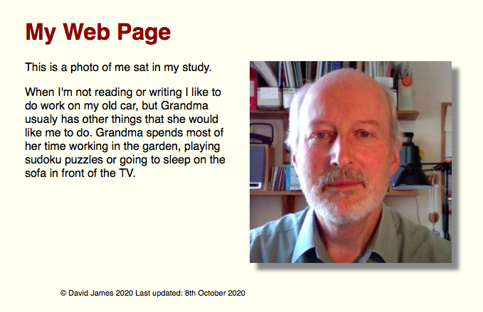

Create a Web Page
I'm sure that you often look at web pages. In fact, you are looking at one now. But have you ever thought that you could create your own web pages?
It's easy. You just use words. You put your words between some special words that are called tags. All tags start with the < symbol and end with > and some tags come in pairs, with your words between them. If you look at the picture you can see a number of tags, including the paragraph tag (<p> ... </p>) around 'Some words.'.
You can see the <head> tags. They have information between them that tells your browser what to do. Then, between the <body> tags, you put what you want to appear on your web page. You can divide it up into parts by using the <section> tag. If you want to show a picture then you can use the <img> tag. This is a tag that doesn't have an end tag.
If you go here you will find three files, MyWebPage.html that is the web page, a file called style.css that tells the browser how to display your page and a picture file me.jpg that is shown in the page. Copy the files to your own computer and change the MyWebPage file to say what you want and add photos that you want to be on your page. I think that all documents, including web pages, should have the date they were created, so I've put that in a <footer> tag.
Let me see what you can create.